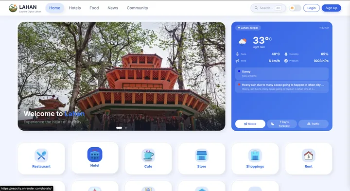

How I Built LAHAN Hub
LAHAN Hub started as an attempt to bring several useful city experiences into one coherent platform. Instead of treating the site as a single feature, I organised it as 21 interconnected Django applications covering local services, businesses, community features and everyday utilities.

Architecture
Python and Django provide the application layer, PostgreSQL stores the structured data, and Docker keeps the development and deployment environment reproducible. The interesting part wasn't any single application — it was the relationships between them: shared authentication, shared user profiles, and data that sometimes needed to cross application boundaries without turning the codebase into spaghetti.
Deciding the boundaries
The hardest decisions were about where each application's responsibility ended. A marketplace listing, a business profile and a community post look similar in code but behave differently in life. I learned to define those boundaries early — and to let a few intentional shared services exist where duplication would have been worse than coupling.
What I learned
- Define boundaries between application areas before features, not after
- Keep data models understandable — future-you is the main user of your schema
- Design navigation around what people need to do, not around the code structure
- A reproducible Docker environment pays for itself the first time a "works on my machine" bug appears
See the LAHAN Hub project page for the full case study. If you're planning a platform with many moving parts, my custom software development service is where that experience gets applied — or browse all articles.